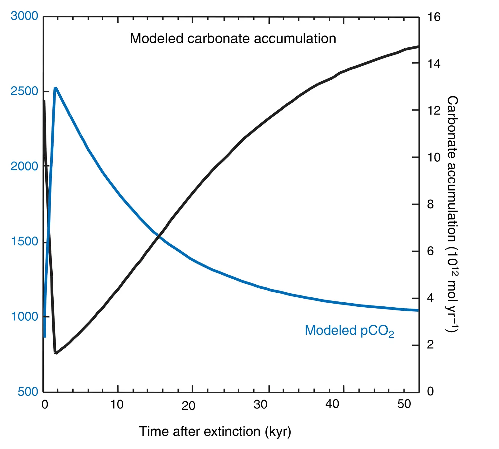

Major perturbation of ocean chemistry and a 'Strangelove Ocean' after the end-Permian mass extinction
Key finding. Simulations with an ocean-atmosphere carbon-cycle model show that a severe reduction of marine primary productivity can explain the abrupt end-Permian carbon-isotope excursion, and that it would have raised surface-ocean dissolved inorganic carbon and driven atmospheric CO2 from a Late Permian baseline of 850 ppm to about 2,500 ppm.

What question did this research address?
The end-Permian extinction, about 251 million years ago, was the most severe in the geological record, and it came with a rapid 3 per mil negative shift in the carbon isotopic composition of the surface ocean and atmosphere that persisted about 500,000 years.
How fast that shift happened decides what caused it. Changes in weathering or in the balance of buried and eroded carbon take hundreds of thousands to millions of years; redistributing carbon within the ocean-atmosphere system takes thousands to tens of thousands. This paper asked whether a productivity collapse can produce the observed excursion.
What did we find?
The timing constraint is tight. Radiometric dating limits the extinction pulse in China to under a million years and the isotope shift to less than about 165,000 years; Milankovitch cyclostratigraphy across the Permian-Triassic boundary in the Austrian Alps puts the abrupt marine faunal change within about 8,000 years.
That speed rules out weathering-cycle explanations, which operate on hundreds of thousands to millions of years, and points instead at a redistribution of carbon within the ocean-atmosphere system.
A geochemical model of the ocean, atmosphere, and rock reservoirs — a three-box ocean plus atmosphere — reproduces the excursion when marine productivity collapses, together with changes in the delivery and cycling of carbon on land and in the sea.
Carbon that would have been exported to depth by the biological pump stays in the surface ocean, so surface dissolved inorganic carbon rises and CO2 goes to the atmosphere, taking it from 850 ppm to roughly 2,500 ppm as a rapid, short-term excursion.
The higher surface-ocean alkalinity that follows may explain a distinctive feature of the rock record: the widespread microbial and abiotic shallow-water carbonate deposits of the earliest Triassic.
The model is also consistent with a long-term decrease, over more than a million years, in the sedimentary burial of organic carbon in the Early Triassic.
Why does it matter?
It gives the 'Strangelove Ocean' — an ocean with its biological pump switched off — a quantitative test, and shows the idea survives comparison with both the isotope record and the carbonate record.
Explaining the earliest Triassic microbial carbonates as a chemical consequence of the extinction, rather than an unrelated oddity, ties two separate lines of evidence to one event.
A jump from 850 to 2,500 ppm driven by ecosystem collapse rather than by volcanism is a reminder that the biosphere is itself a control on atmospheric CO2, not only a passive recipient of it.
Citation, data, and code
Michael R. Rampino and Ken Caldeira (2005). Major perturbation of ocean chemistry and a 'Strangelove Ocean' after the end-Permian mass extinction. Terra Nova 17, 554-559.
Related
- What does the deep-time record reveal about how the Earth system behaves?
- How long does a carbon dioxide emission go on warming the planet?
- Aftermath of the end-Cretaceous mass extinction — possible biogeochemical stabilization of the carbon cycle and climate (Caldeira and Rampino, 1993)
- Sixteen mass extinctions of the past 541 million years correlated with 15 pulses of Large Igneous Province volcanism and 4 large impacts (Rampino et al., 2024)
- Continental-pelagic carbonate partitioning and the global carbonate-silicate cycle (Caldeira, 1991)